ThingSpeak dashboard
Temperature (°F) and humidity (%) channels uploaded from prototype firmware, used as an end-to-end check before field deployment.
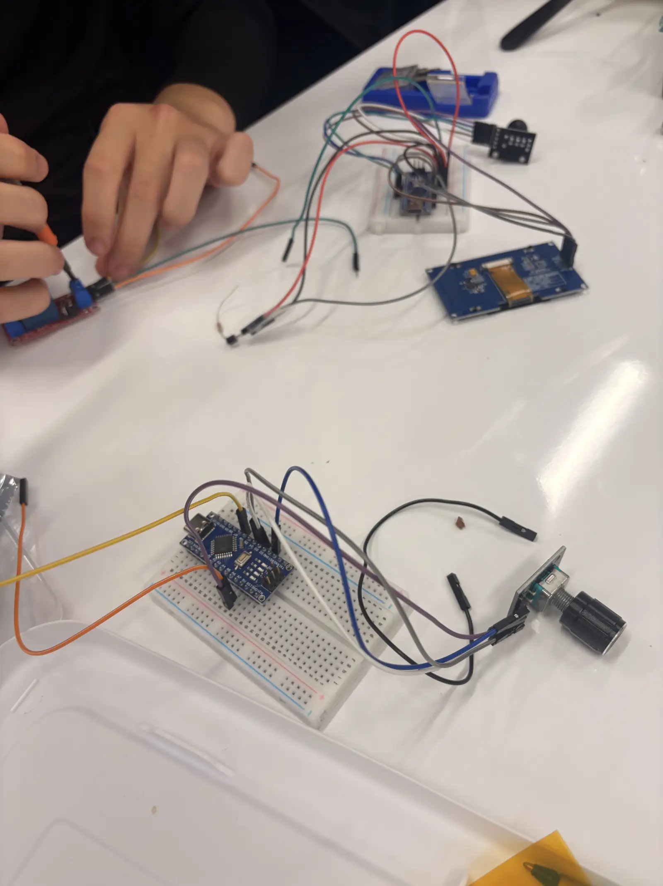
MESA DVC Foundation, Division of Engineering, Spring 2026 cohort
We study and support the 3 campus ponds at Diablo Valley College through reproducible measurements, controlled cultures (~30 °C capsule work) and field-ready platforms, documented alongside biology collaborators and published on our IO hub.
Stakeholders, ponds and sampling efficiency
2–3 hours
for a team of 5 to sample the ponds by hand, across multiple sites. Faster, repeatable sampling is the problem this team is working on.
The 3 DVC ponds support turtles, ducks, geese, and other wildlife. Observations note murky water, algae on walls, and occasional stressed fauna; circulation and aeration may be limiting factors. Manual sampling has taken 2–3 hours for a team of 5 across multiple sites, which is slow for decision-grade monitoring.
We are building repeatable instrumentation (lab capsule, bench IoT, and surface/underwater platforms) so biology and engineering can share aligned datasets, from bacteria cultures at ~30 °C to field temperature, pH, and turbidity traces.
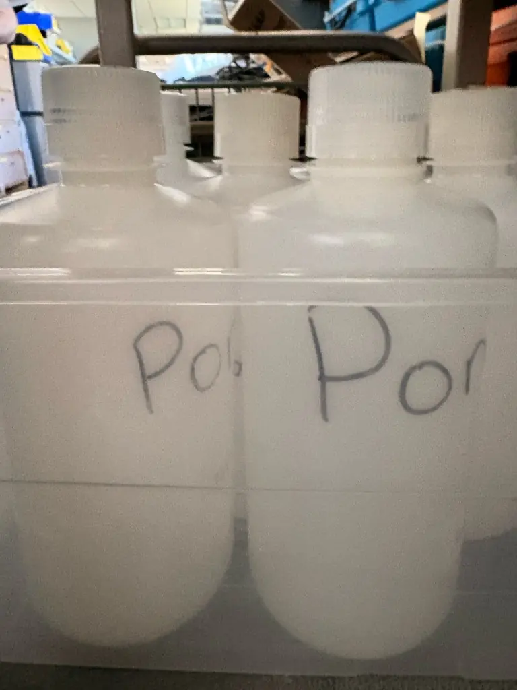
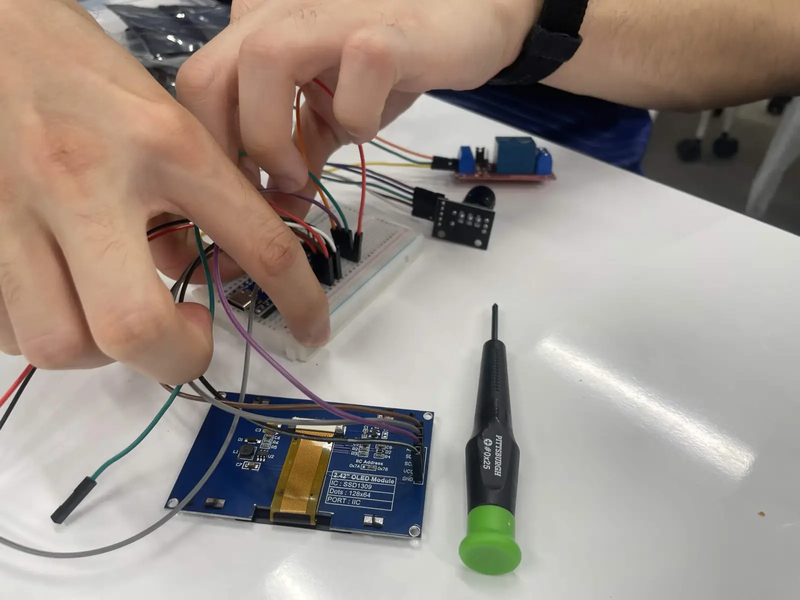
“A multi-disciplinary initiative dedicated to rigorous monitoring and scientific study of campus pond ecosystems through integrated sensor networks, lab cultures, and field-ready platforms.”
Technical overview, DVC Pond Research engineering team
Photo Connecting jumper leads to the 2.42-inch OLED display module of the heater controller.
Cloud logging and bench hardware
Compiled from the project goals, roadmap and milestones on this page. Plans change with design reviews.
| Reading | How | Status |
|---|---|---|
| Temperature | DHT-style sensor on the ESP8266 bench prototype; ThingSpeak Field 1 (°F). Blueprint goal: start with the temperature sensor path. | Logging from bench hardware |
| Humidity | Same bench prototype; ThingSpeak Field 2 (%). | Logging from bench hardware |
| pH | Sensing plan lists temperature and pH first; test strips read against lab control swatches. | Planned first |
| Turbidity | Sensing plan, after temperature and pH. | Planned |
| Dissolved oxygen | Sensing plan, after temperature and pH. | Planned |
| General hardness | Hardness testing in the sensing plan. | Planned |
| Position (GPS) | IoT monitor / boat design reviews; GPS tutorials for waypoint logging. | Planned |
| Test strip color | Color grading system on GitHub; camera + model path under evaluation. | Software on GitHub |
Temperature (°F) and humidity (%) channels uploaded from prototype firmware, used as an end-to-end check before field deployment.
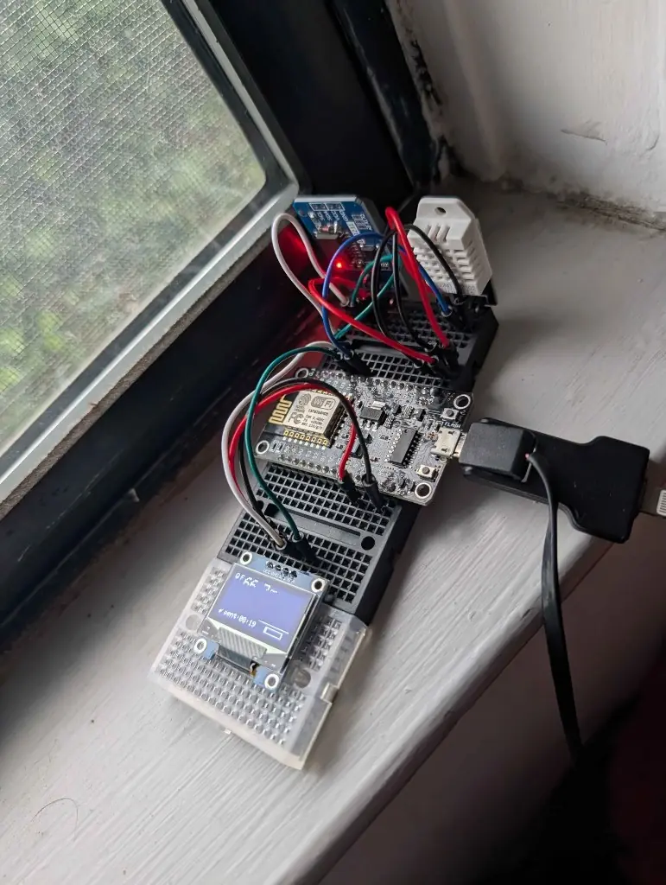
NodeMCU-class board with local display, DHT-style temperature/humidity sensing, and WiFi uplink: the foundation for capsule logging and future pond surface nodes.
Capsule, logging and robotics
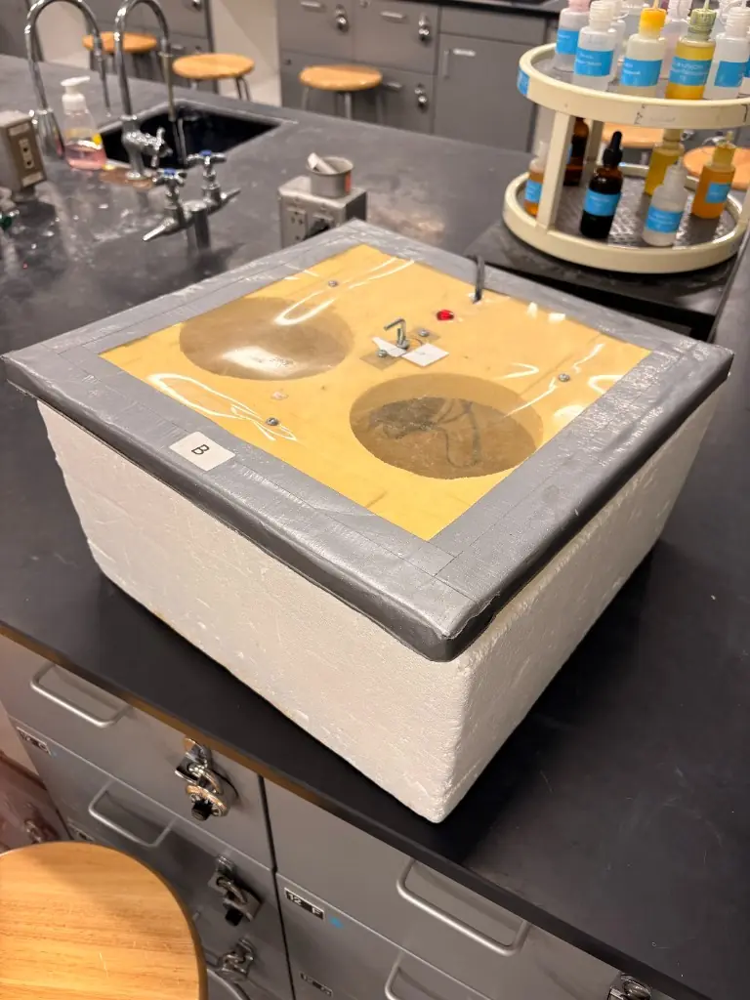
Insulated chamber with viewing ports, power entry, and indicator, paired with a resistive heat path (e.g. Kanthal-class wire) and closed-loop control once the temperature controller stage is integrated.
Waterproof bench tanks and IP-rated project boxes under evaluation for wet testing (see references).
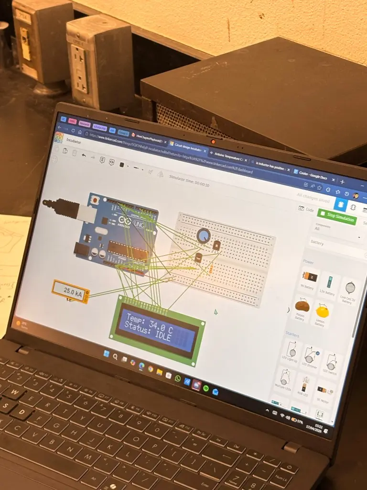
Microcontroller bring-up in simulation, then hardware: thermostat lesson analogs in Tinkercad, Wokwi for firmware checks, then capsule wiring with faculty-reviewed power limits.
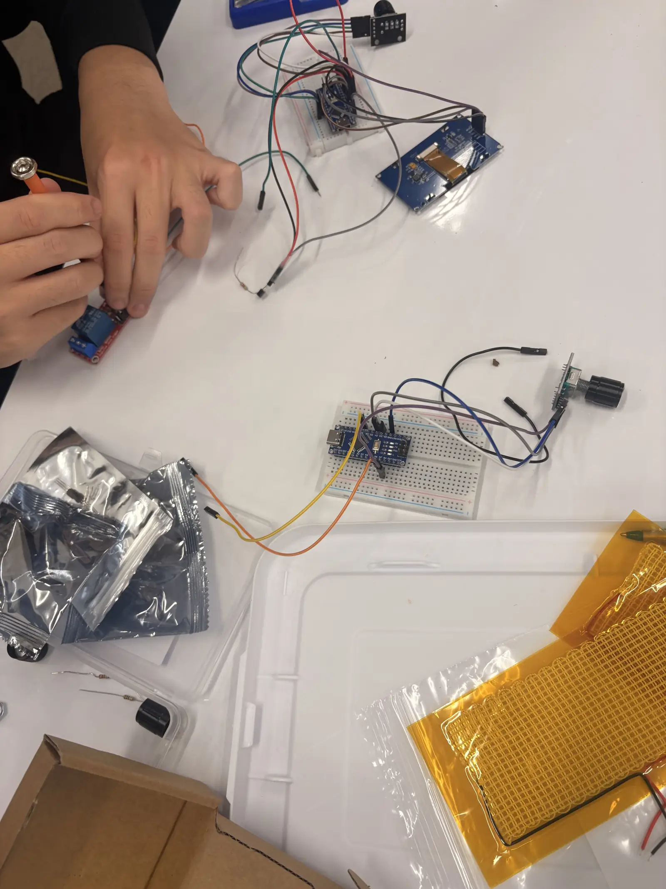
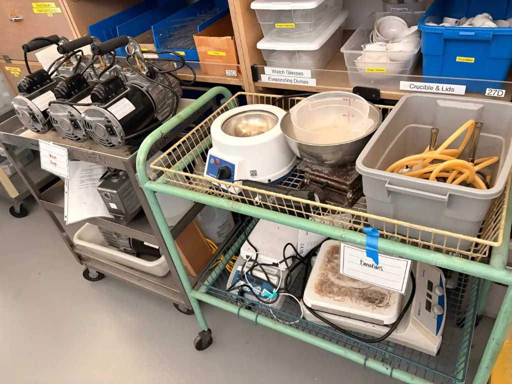
Robotic fish / boat concepts for mobile temperature and water-quality mapping; cart-scale prep for pH, scales, and hot-plate workflows supporting bio cultures.
24/7 temperature & humidity with live display + ThingSpeak (or successor) channels.
Timeline with dependencies; student-government deck; need statements for metrics beyond pH/DO/turbidity.
GitHub color-grading system linked to strip imaging hardware experiments.
Bacteria capture and growth supported by controlled capsule and shared data model with IO site.
Version control, color pipeline and simulations
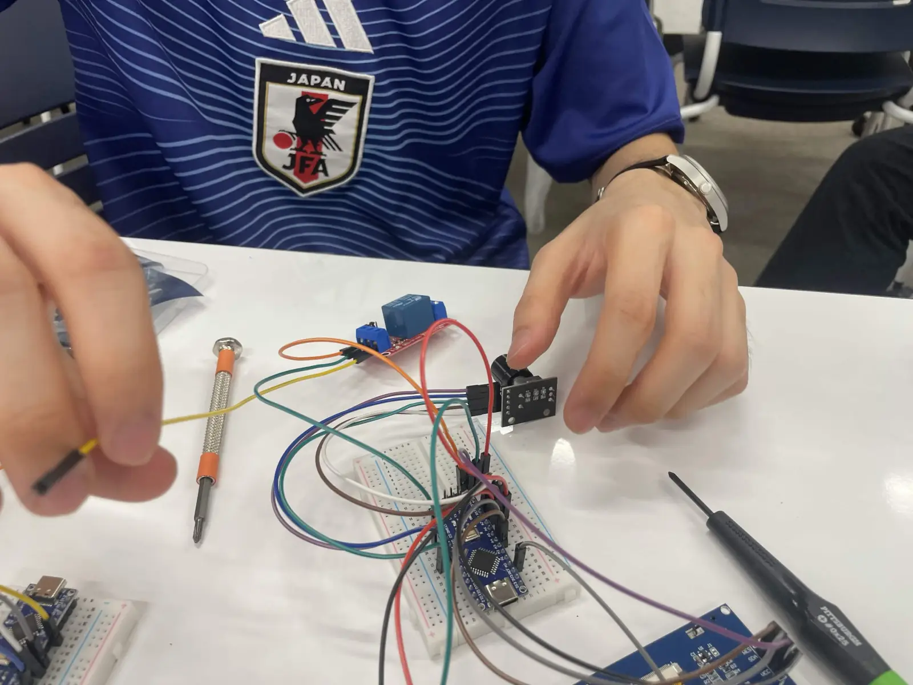
How the capsule's temperature controller moved from simulation to the bench, in the team's own photos.
The incubator circuit runs in a Wokwi simulation before any wiring. The serial log prints lines such as “Temp: 32.00 C | Target: 31.0 C | Heater: OFF”.
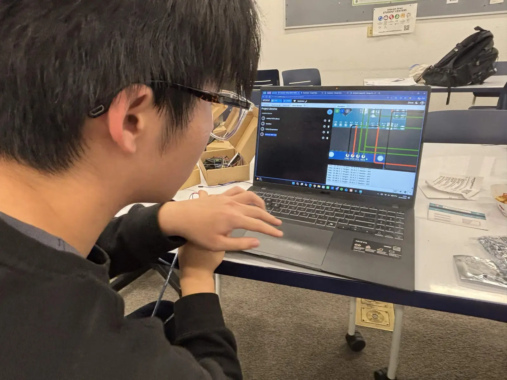
On the bench the circuit is wired on a breadboard: an Arduino Nano, a 2.42-inch OLED display, a rotary encoder and a relay module.
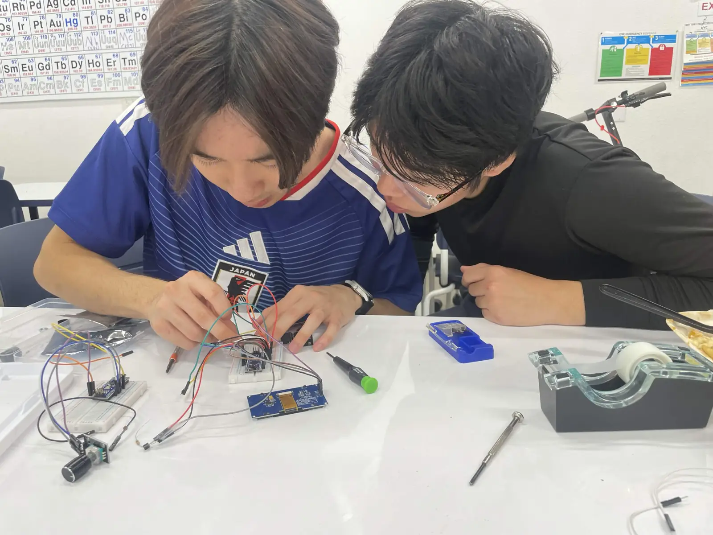

The Arduino sketch uses the OneWire, DallasTemperature and SSD1306 libraries. The OLED shows the controller state, here “Incubator, Target: 30.0 C”.
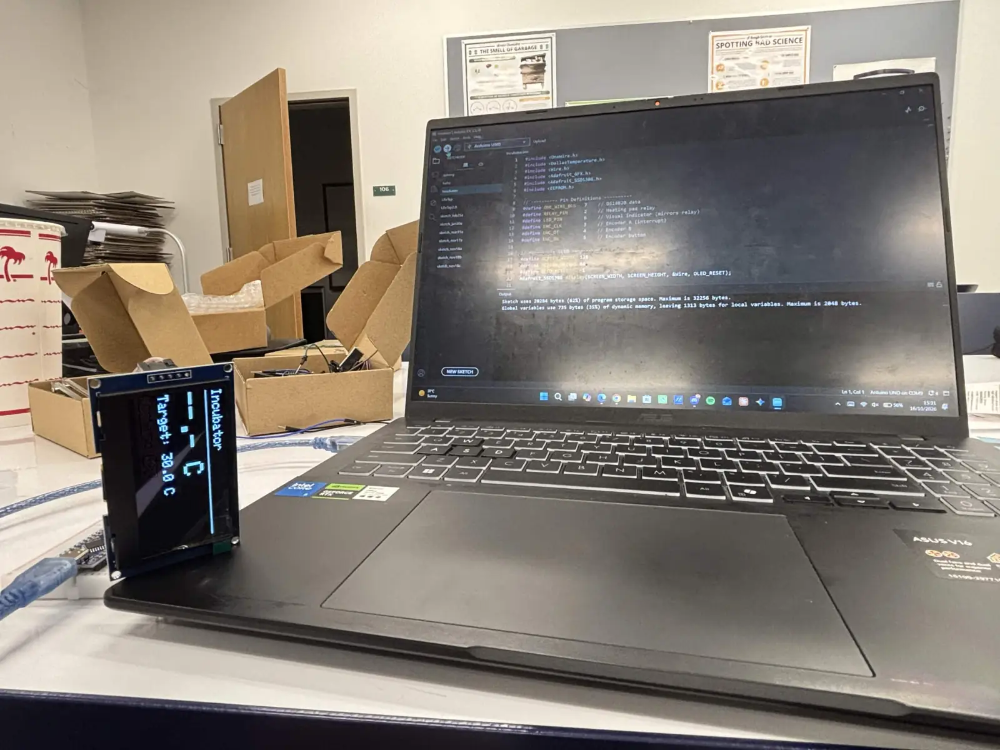
The controller is taken outside and handled as a unit. Both readouts show fault messages: “FAULT: HEAT OFF” with a prompt to check the sensor / temp, and “Target: 36.9 C” with “FAULT: HEAT OFF”.


The whiteboard from a team meeting lists what to fix next: a code error from the last meeting, averaging the temperature over 3 readings, connecting the heat pad, and a temperature sensor that was not accurate, with the open question of whether the code or the process was at fault.

Key metrics from the current field and bench campaign. Figures update as the team publishes to the IO hub and ThingSpeak.
Temperature and humidity channels from bench firmware. The public chart embed will appear here once the channel is public; until then, the dashboard screenshot in Methods shows the proof-of-concept charts.
Open ThingSpeak (opens in a new tab)Measurements, field notes, and lab documentation on the project IO site.
Open IO documentation (opens in a new tab)Shared Google Sheet for pond runs, timestamps, and notes.
Open spreadsheet (opens in a new tab)Export PDFs from the linked repositories or request formal reports from the faculty advisor.
Last updated
Status, spring 2026
Done
Tinkercad incubator path validated for sensor stage; assembly with controller + coil queued.
Active
ThingSpeak fields live from bench hardware; OLED local readout.
Active
Insulated prototype on bench with wiring iterations.
Next
3D-printed shell, seals, thruster/servo trade studies, weight budget.
Engineering notes from the 27 Feb 2026 docs
Weight vs. buoyancy with multiple sensors; speed vs. drag; weather sealing; solar vs. battery budget; smaller hull means faster iteration.
Sensor fusion for effective robot navigation: research alongside Adafruit fundamentals and GPS tutorials for waypoint logging.
Roles from incubator planning, April 2026
Web and documentation
Site layout, README, media, Markdown planning docs, combined vs. split Engineering/Bio information architecture.
Hardware & circuits
Heat incubator, Tinkercad schematics, pin/sensor selection, BOM and sourcing.
Hardware & circuits
Incubator assembly, bench validation, integration with temperature controller and heat coil.
Software and documentation
Listed on planning drafts; role TBD per latest roster.
Faculty advisor
Safety, experimental design, stakeholder alignment, and integration with course outcomes.
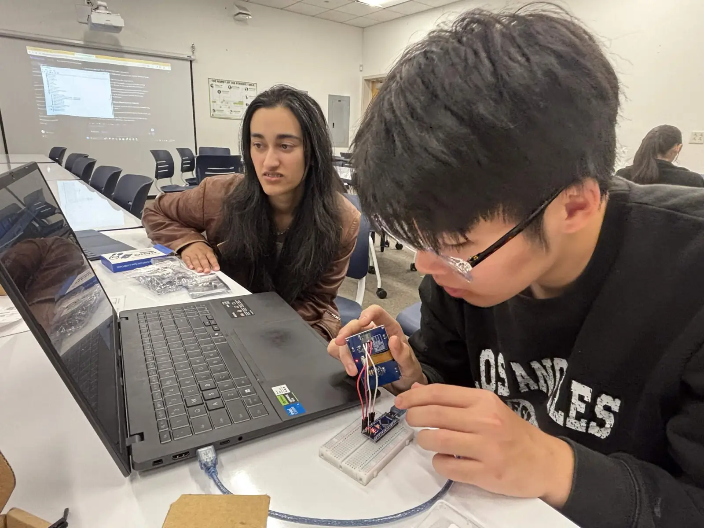
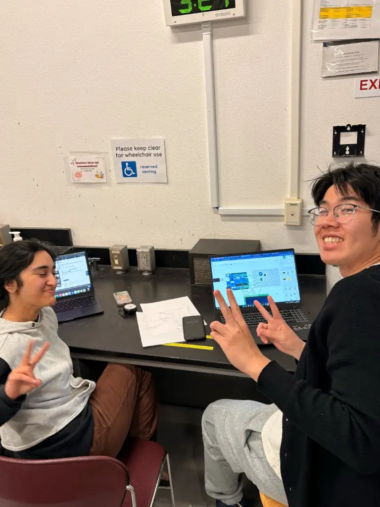

Lab, bench, and planning artifacts
External guides, community builds and papers
Note on commercial chassis: search “underwater ROV kit” or marketplace listings for sizing only; verify ratings and seals independently.
No DOI yet: use the canonical documentation hub
DVC Pond Research engineering team. DVC Pond Research Project: student engineering documentation and field notes (Spring 2026). Diablo Valley College; MESA DVC Foundation affiliation.
Retrieved from the IO documentation hub (opens in a new tab) and this project site. Replace with a formal citation once a Zenodo archive or proceedings DOI is published.